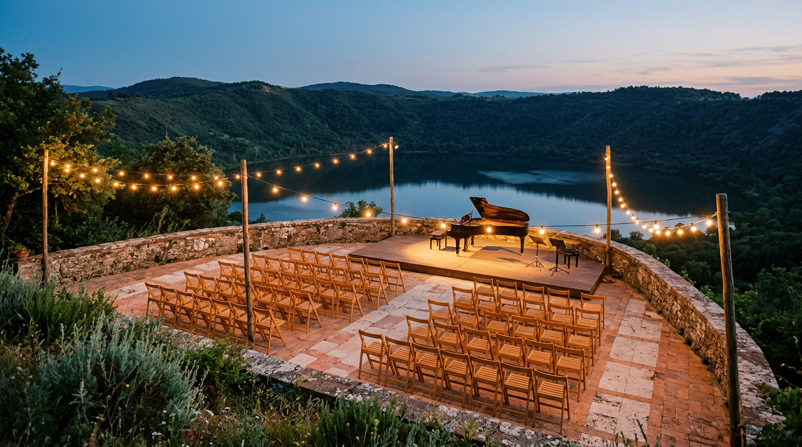

Estate 2026 sul lago — concerti, lirica, jazz.

Ora che il borgo è tornato al passo lento di novembre, vale la pena guardare indietro. L'estate 2026 ha avuto un sapore speciale: in luglio il Papa è tornato ad abitare il Palazzo Apostolico, e intorno a lui un cartellone che ha portato musica in piazza, in chiesa, nel cortile pontificio e perfino sull'acqua del lago.
Fine giugno: la musica e la spiritualità
La stagione si è aperta il 27 giugno con “Sui passi della musica e della spiritualità”, otto appuntamenti gratuiti in tre fine settimana promossi dal Comune con la Parrocchia Pontificia di San Tommaso da Villanova e il sostegno della Regione Lazio (Comune di Castel Gandolfo). Il programma ha attraversato i luoghi simbolo del borgo: la chiesa berniniana con Caccini, Mozart, Verdi e Bizet, la cripta con la fisarmonica sola di Marco Lo Russo Rouge, poi Piazza della Libertà con l'ensemble di chitarre del Conservatorio di Frosinone, un tributo a Fabrizio De André e “La Serva Padrona” di Pergolesi. Chiusura il 12 luglio con un Galà lirico in piazza (Comune di Castel Gandolfo).
Luglio: il Papa nel cortile
Lo stesso 12 luglio Leone XIV ha recitato il primo dei tre Angelus di luglio in Piazza della Libertà, seguiti da quelli del 19 e del 26 (Diocesi di Albano). La sera di sabato 18 luglio il cortile del Palazzo Apostolico ha ospitato il Concerto in onore del Santo Padre offerto dalla Diocesi di Albano: la Polacca dal Terzo Concerto per violino di Paganini, con Marco Rogliano, e la libera fantasia sulla Norma di Bellini scritta da Luis Bacalov per la pianista Rossana Tomassi Golkar, con I Musici di Parma diretti da Pier Carlo Orizio (Vatican News). L'orchestra contava 55 elementi (Stato della Città del Vaticano). Al termine il Papa ha parlato di una bellezza che “ci aiuta a vedere e ad alzare lo sguardo verso il cielo” (Vatican News).
Dal 20 al 26 luglio la 90ª Sagra delle Pesche si è spostata ogni sera in una frazione diversa, dal Lungolago a Pavona, prima di approdare al centro storico con la benedizione delle pesche e due concerti in piazza (Castellinforma). La sua storia l'abbiamo raccontata in un articolo dedicato.
Agosto: rock, jazz e lirica
Dal 12 al 16 agosto il lungolago ha ospitato la tappa castellana del Rock Festival, la rassegna itinerante che ha toccato anche Albano, Torvaianica, Ciampino e Roma (RomaToday). Sabato 22 agosto Piazza della Libertà ha accolto il contrabbassista Enzo Pietropaoli e la cantante Eleonora Bianchini per “Castelli in Jazz for SLA”: circa trecento persone, ingresso libero e offerte per la ricerca sulla sclerosi laterale amiotrofica (Il Mamilio). Il 28 agosto, sulle rive del lago, un Gran Galà della Lirica con il tenore Aurelio Grimaldi e il soprano Olena Kovalova tra arie d'opera, operetta e canzone napoletana (Castellinforma).
“È la prima volta che un Pontefice partecipa alla processione sul tratto d'acqua.”Corriere della Sera, 29 agosto 2026
Il finale sull'acqua
Il momento che resta è arrivato il 29 agosto. Dopo la Messa nella chiesa della Madonna del Lago, Leone XIV ha seguito la processione fino alla riva ed è salito con il simulacro della Vergine sul battello del Parco dei Castelli Romani, attraversando il lago di Albano (Sala Stampa della Santa Sede). La traversata, circa venticinque minuti, era accompagnata da una quindicina di imbarcazioni; la processione sul lago era nata nel 1954, nell'Anno Mariano di Pio XII (Vatican News). Paolo VI e Giovanni Paolo II vi avevano partecipato, ma nessuno dei due aveva percorso in barca il tratto sull'acqua (Corriere della Sera).
Cosa segnarsi per il 2027
I calendari ufficiali del prossimo anno non sono ancora usciti, ma alcune date seguono la tradizione: la Sagra delle Pesche cade a luglio, la festa della Madonna del Lago a fine agosto. Nel frattempo la musica non si ferma: la rassegna “Musica ai Musei” dei Musei Vaticani porta concerti anche nel Palazzo Apostolico fino al 27 novembre (Turismo Roma). Per gli appuntamenti aggiornati, la nostra pagina Eventi.